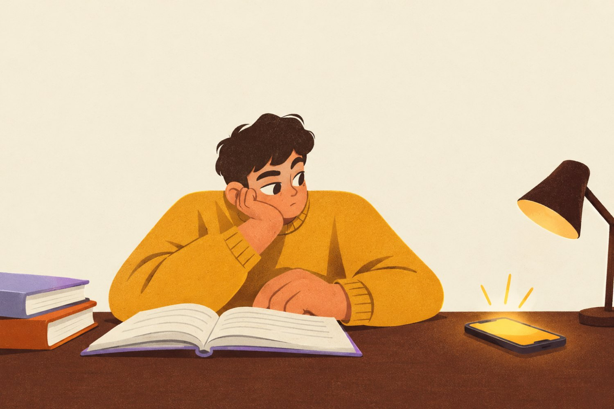

Psixologiya · DiqqatPsychology · AttentionDiqqat muddati haqiqatan ham qisqaryaptimi?Are attention spans really shrinking?
“Odamning diqqati oltin baliqnikidan ham qisqa” degan gapni ko'p eshitgansiz. Olimlar bu savolni laboratoriyada ham, real hayotda ham tekshirib ko'rishdi — natija kutilganidan boshqacha.Is it true that “our attention is shorter than a goldfish's”? Scientists checked in the lab and in real life, and the answer is not what you might expect.
≈ 3 daqiqa o'qish · Scientific American / Nature≈ 3 min read · Scientific American / Nature